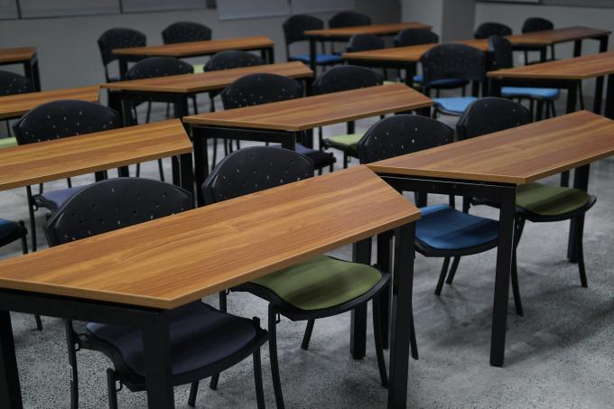

Shall We Return to School?
March 15, 2021
By: Jose Eos Trinidad
- Students—both young and old—are cooped up at home, doing their lessons in Zoom or Google classrooms, limited by the four corners of their room or the literal four corners of their home, and somehow, in a way, limited too in their imagination by the lack of intellectual stimulation and nutrition usually afforded by the physical classroom. Teachers are in no better position: they instruct, write lesson plans, answer emails, and attend meetings in the same seat for more than eight hours a day—just a little less worse than being forced to stay in one’s airplane seat during a long-haul flight. Parents, too, have it tough with juggling the demands of both work and home—whether as essential workers who risk life and limb, work-from-home laborers, or recently, as displaced individuals.[1]
And so many ask, “Shall we return to school?” Some who are a little more impatient inquire, “When shall we return to school?”Different countries have had different ways of addressing this crisis. In the United States, some urban districts have remained fully online with classes being done remotely. Some nations, like Belgium, Japan, and France, have returned fully to in-person classes, with many implementing proper social distancing requirements. Others have experimented with a blended or hybrid combination of online and onsite classes, alternate school days, voluntary in-person classes, or mixed synchronous and asynchronous sessions. These decisions, of course, will depend on the level of COVID-19 transmission in a locality, the resources and needs of students and families, the establishment and implementation of proper safety protocols, and the balancing of the risks and benefits of returning to in-person schooling.[2]
Now, for the Philippines, shall we or should we return to school? Studies in other countries have shown low rates of virus transmission in schools, particularly when proper social distancing and mask-wearing are observed.[3] Moreover, the Asian Development Bank has done a cost-benefit analysis of the situation in the country and argued that the “overall health and economic costs of national face-to-face school closure are about 70 times higher than the COVID-19 control benefits, assuming that other control efforts continue.”[4] They further state that untargeted wholesale closures may not be the most effective modus operandi. It might seem, then, that the stars are pointing to at least the possibility of returning to school.
I would argue, however, that the question of returning to school is only a secondary albeit important one to the question that we do not seem to be asking: “What are schools for?”
In a mad rush to ensure that students are still “learning” and that we are practicing social distancing, many schools have transitioned to remote teaching—in a way, trying to recreate the classroom experience in an online or modular environment. There was a transposition of things that could be done in person to that which was possible online: breakout rooms, asynchronous lectures, synchronous discussion sections, online tools for classroom engagement, virtual study halls, and so on. Many teachers as well have opted to retrain themselves with techniques and strategies for this new mode of teaching.
And yet really, a more primordial question about what schooling is for needs to be asked. It is only when we are clear about this that we can answer the question of if—and when—we shall return to school.
For some, schooling is for enriching human capital and making one economically competent. For others, it is about flourishing and the honing of one’s talent. Some see the school as a space for socialization; others consider it a place for individuation.[5] Although not often verbalized, many others view schools a little more cynically as child/adolescent daycare centers that allow parents to work at their day jobs. There are many overlaps here, of course, yet I share these opinions to underscore that breadth of reasons for bringing individuals to school. In our current situation, which purpose of schooling are we to emphasize?
If we are to emphasize schools as places for human capital development, is not the current online mode already appropriate for such? If we are to emphasize schools as places to socialize in, how can this be done online? Is this better done in person? If we are to emphasize the discovery of talent and extra-curricular activities, what are ways of doing this safely and while socially distanced? If we are to relieve parents of the double-burden of doing work and being secondary teachers, does this justify returning to in-person classes?
Many questions are raised regarding if and when we are to return to school. I would argue that we can answer these only when we know and are clear about what schools are for. While this pandemic has led to many difficult and cruel moments—both personally and socially—it provides the education system right now with a chance to soul-search and see what “education” really means.
They say the word “education” comes from the Latin educare, which means “to lead out.” This is often interpreted in a way as leading people out of ignorance. I would like to think of this, though, as leading us out of the classroom, leading us out of the comfortable, and bringing us to the realm of the possible. But education can only lead us out to the degree that we know—at least vaguely—where we are going.
- Comments, ideas, and conversations are most welcome. Please reach out to jtrinidad@ateneo.edu. [1]If someone reads this in the far future, we talk here of the COVID-19 pandemic that we are still experiencing in 2021. [2]Some interesting papers and news articles to read include the Conversation’s “How other countries reopened schools during the pandemic,” Washington Post’s “Reopened schools in Europe and Asia have largely avoided coronavirus outbreaks,” Education Week’s “How Hybrid Learning Is (and Is Not) Working During COVID-19,” and my article on “Equity, engagement, and health: school organisational issues and priorities during COVID-19.” [3]You may read Goldstein et al.’s “On the Effect of Age on the Transmission of SARS-CoV-2 in Households, Schools, and the Community,” Lewis’s “Why schools are probably not COVID hotspots,” and Falk et al.’s “COVID-19 Cases and Transmission in 17 K–12 Schools — Wood County, Wisconsin.” [4]See Raitzer et al.’s “Cost–Benefit Analysis of Face-to-Face Closure of Schools to Control COVID-19 in the Philippines.” [5]A recent paper I published with Iva Melissa Magsalin and Maxine Diane Raz explains this with greater depth: “‘More than professional skills’: student perspectives on higher education’s purpose.” The views and opinions expressed in this note are the author’s own and do not necessarily reflect those of the School of Humanities and/or the Ateneo de Manila University.